Autocovariance
Based on Stock and Watson, ch. 15
Jesper Bagger
EC2208 | Royal Holloway | 2021/22
Time series data
Time series data
Time series data is data collected for a single entity at multiple points in time
- Profits of a particular firm
- A country’s quarterly GDP
- A region’s monthly unemployment rate
- Daily Covid-19 infections
Univariate series data on \(Y\): \(\{Y_t;t=1,2,\ldots,T\}\)
Time series data can be used for causal analysis (but now, dynamic) and prediction (now called forecasting)
US quarterly GDP
# load US macroeconomic data
usmac_qt <- read_xlsx("us_macro_quarterly.xlsx", sheet = 1, col_types = c("text", rep("numeric", 9)))## New names:
## * `` -> ...1# Fix format of date
usmac_qt$...1 <- as.yearqtr(usmac_qt$...1, format = "%Y:0%q")
# Relabel column names in dataframe
colnames(usmac_qt) <- c("Date", "GDPC96", "JAPAN_IP", "PCECTPI",
"GS10", "GS1", "TB3MS", "UNRATE", "EXUSUK", "CPIAUCSL")
# GDP series as xts object
GDP <- xts(usmac_qt$GDPC96, usmac_qt$Date)["1960::2013"]
# GDP growth series as xts object
GDPGrowth <- xts(400 * log(GDP/lag(GDP)))US quarterly GDP
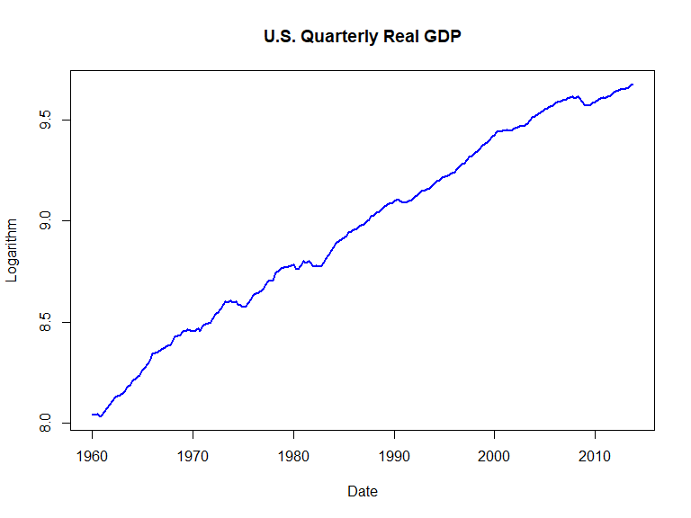
US quarterly GDP growth rate
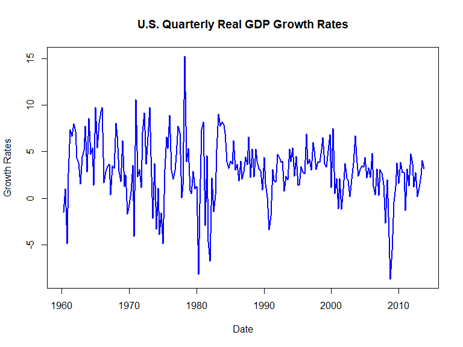
Autocovariance
Population autocovariances
Autocovariance is the covariance b/w a random variable \(Y\) in two periods
The 1st autocovariance of \(Y_t\) is \(\mathrm{cov}(Y_{t},Y_{t-1})\); the \(j\)th autocovariance is \(\mathrm{cov}(Y_{t},Y_{t-j})\)
The \(j\)th autocorrelationis \(\rho_j = \frac{\mathrm{cov}(Y_{t},Y_{t-j})}{\sqrt{\mathrm{var}(Y_{t})}\sqrt{\mathrm{var}(Y_{t-j})}}\)
Autocorrelations also called serial correlations
We refer to \(\mathrm{cov}(Y_{t},Y_{t-j})\) and \(\rho_j\) as a function of lag lenght \(j\) as autocovariance and autocorrelation functions
Sample autocovariances
The analogue principle suggests the following estimators have good statistical properties:
\[\widehat{\mathrm{Cov}(Y_t,Y_{t-j})} = \frac{1}{T} \sum_{t=j+1}^T (Y_t - \overline{Y}_{j+1:T})(Y_{t-j}-\overline{Y}_{1:T-j})\]
\[\widehat{\rho}_j = \widehat{\mathrm{Cov}(Y_t,Y_{t-j})}/\widehat{\mathrm{Var}(Y_t)}\]
where \(\overline{Y}_{j+1:T}\) is sample average of \(Y\) from observations \(t = j+1,\ldots,T\); \(\widehat{\mathrm{Var}(Y_t)}\) is sample variance of \(Y\)
The autocovariance function in R
##
## Autocorrelations of series 'na.omit(log(GDP))', by lag
##
## 0.00 0.25 0.50 0.75 1.00 1.25 1.50 1.75 2.00
## 1.000 0.986 0.972 0.958 0.944 0.929 0.914 0.900 0.886The autocovariance function plot in R
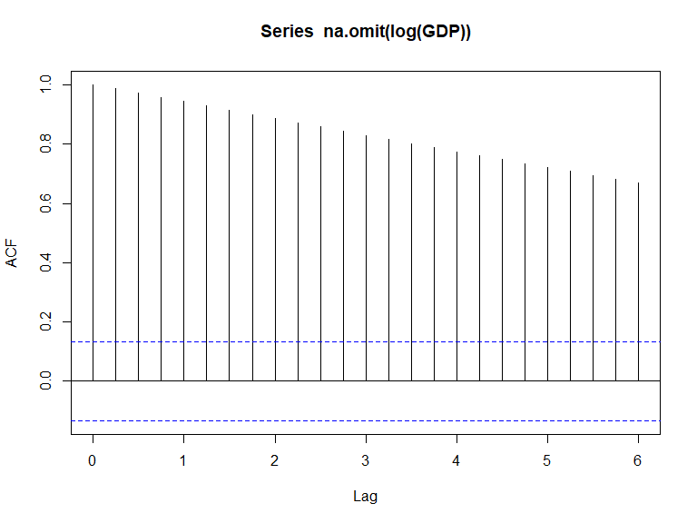
The autocovariance function plot in R
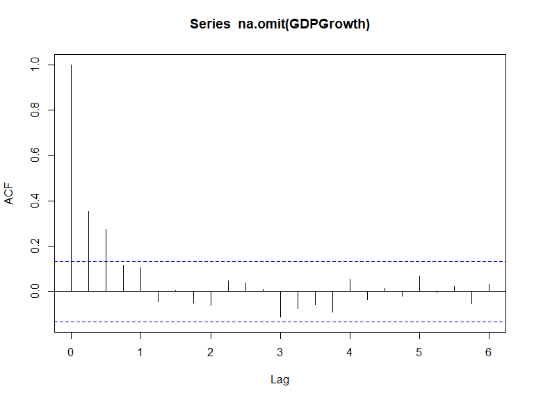
Other economic time series
US unemployment rate
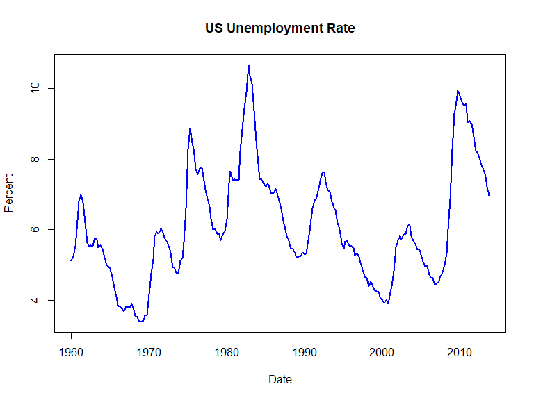
US unemployment rate ACF

USD/GBP exchange rate
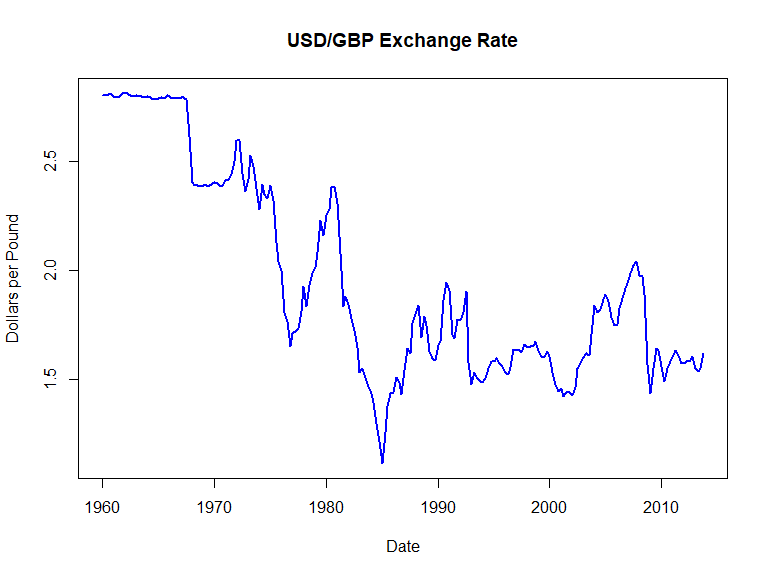
USD/GBP exchange rate ACF
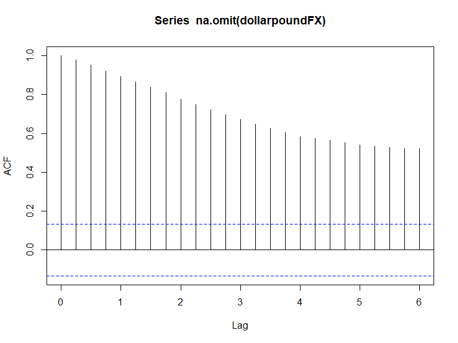
Japanese Industrial Production
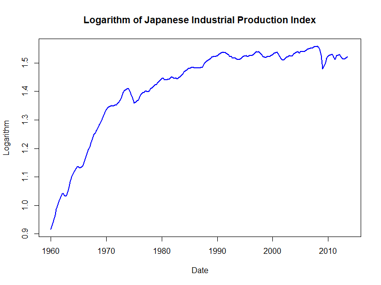
Japanese Industrial Production Index ACF
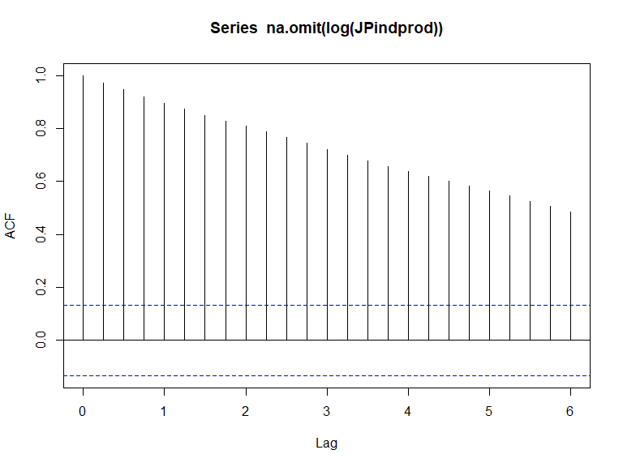
NY Stock Exchange Composite Index (daily changes)
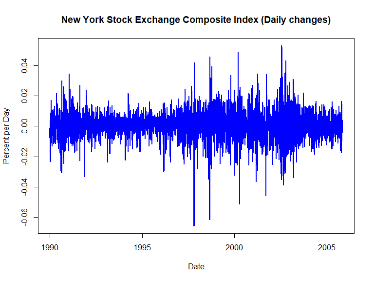
NY Stock Exchange Composite Index (daily changes) ACF
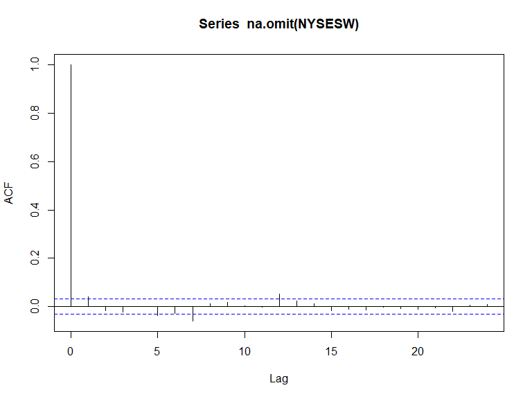
Summary
Summary
Time series data is data collected for a single entity at multiple points in time
Time series data differ from cross section data in that observations are correlated
The covariance between a variable and its past realizations is called autocovariance
The autocovariance of a time series allow us to predict future values from past values